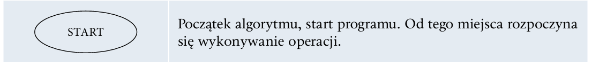
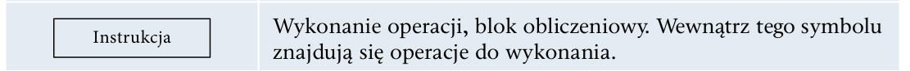
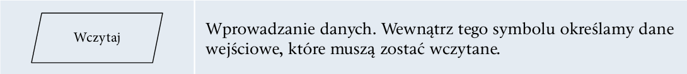
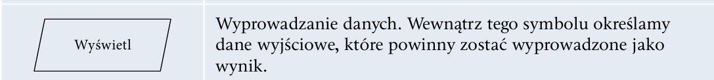
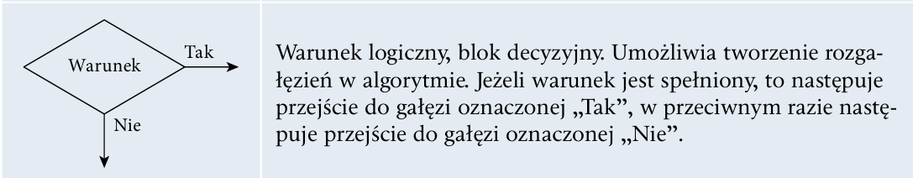
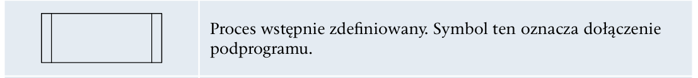
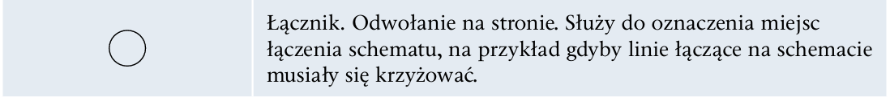

Służy do tworzenia programów komputerowych, których zadaniem jest przetwarzanie danych, wykonywanie obliczeń i algorytmów. Może zawierać konstrukcje składniowe do manipulowania strukturami danych i zarządzania przepływem sterowania. Niektóre języki programowania mają specyfikację swojej składni i semantyki, inne zdefiniowane są jedynie przez oficjalne implementacje.
Składnia
— zbiór reguł opisujących sposób definiowania struktur danych, rodzaje dostępnych słów kluczowych i symboli oraz zasady, według których symbole mogą być łączone w większe struktury.
Semantyka
— zbiór reguł definiujących znaczenie słów kluczowych i symboli oraz ich funkcji w programie.
Typy danych
— dostępne typy danych, ich właściwości oraz operacje, które mogą być wykonywane na wartościach danego typu.
Paradygmaty programowania opisują między innymi programowanie:
Skrypt to napisany w języku skryptowym program, który jest wykonywany wewnątrz aplikacji.
Język skryptowy to język programowania służący do wykonywania wyspecjalizowanych czynności. Języki skryptowe są tworzone z myślą o interakcji z użytkownikiem. Często są wykorzystywane do automatyzowania powtarzających się czynności, np. w systemach administracyjnych lub dynamicznych stronach internetowych.
Algorytm to zestaw ściśle określonych czynności prowadzących do wykonania pewnego zadania. Określa sposób rozwiązania problemu za pomocą sekwencji działań. Języki programowania to narzędzia, które pozwalają na implementację algorytmów. Aby zapisać prosty algorytm, należy stworzyć listę kroków i przekształcić je do odpowiedniej struktury języka programowania.
Schemat blokowy:
| Symbol i Opis |
|---|
|  |
|  |
|  |
|  |
|  |
|  |
|  |